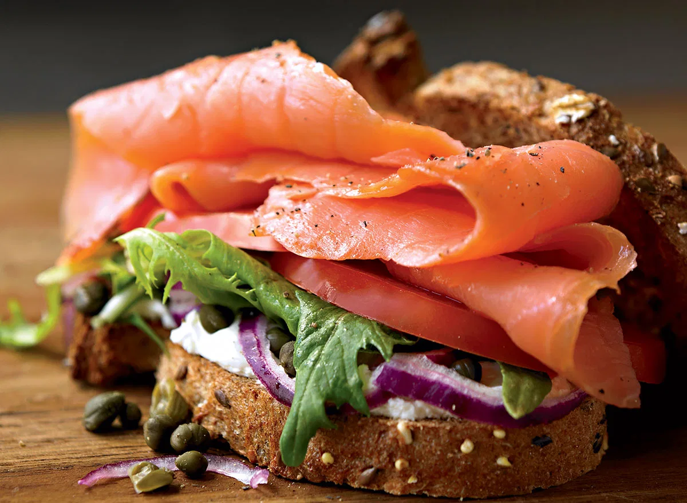

Smoked Salmon Sandwich

Description
All the great flavors that make this such a satisfying breakfast are still here—the richness of smoked salmon, the bite of onion and capers, the sweetness of tomato—but by ditching the oversize bagel in favor of whole wheat toast, you save about 200 calories and trade a ton of refined carbs for a boost of fiber.
Protein Payout: 24 grams
Ingredients
- 1/4 cup whipped cream cheese
- 8 sliced whole-wheat or 9-grain bread, toasted
- Tbsp capers, rinsed and chopped
- 1/2 red onion, thinly sliced
- 2 cups mixed Baby greens
- 1 large tomato sliced
- 8 oz Smoked salmon
- Salt & Pepper to taste
Preperation:
- Spread 1 tablespoon of the cream cheese on each of four slices of toast
- Top each with capers, onion, greens and a slice or two of tomato
- Lightly salt the tomato, then add as much pepper as you'd like (this sandwich cries out for a lot of it).
- Finish by draping a few slices of smoked salmon over the tomatoes and topping with the remaining slices of toasted bread.
Breakfast Pizza
Black Bean Omelet